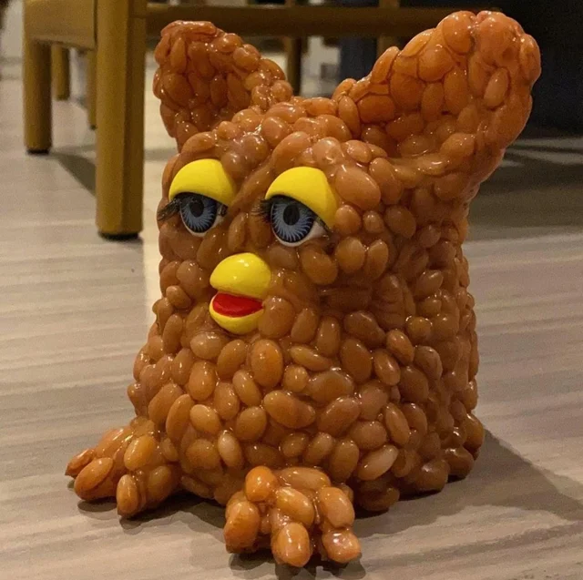

Care
Our furby friends do not reach their full maturity
without a human to bond with! With that being said, congrats! Here are a few tips and tricks to look
after your new friend!
Name your new friend! These little guys love fun names like Bubbles and Skeeter!
Whatever you
decide, your furby will be dancing with joy!
Your new friend loves to eat, but hates vegetables! The best way to make sure your new
friend gets all the yummy nutrients it needs is to stuff it into a burger!
Finally, furbies bond for a lifetime ...good luck! Be prepared to carry your new
furby everywhere
you go.
Caution
Furby Protection Services (FPS) is here to assist you and your Furby with any minor "uh-oh" moments. FPS not liable for loss of life or limb, property damage, acts of global terrorism, or necromancy. "Uh-oh" moments are very very rare! Uh-oh moments are very common.
Uh-oh: Feeding after midnight

Signs: Change in genetic composition; Self-cannibalism
Threat Level: Moderate
Solution: Contact FPS
Uh-oh:
Signs: Change in genetic composition; Self-cannibalism
Threat Level: Moderate
Solution: Contact FPS